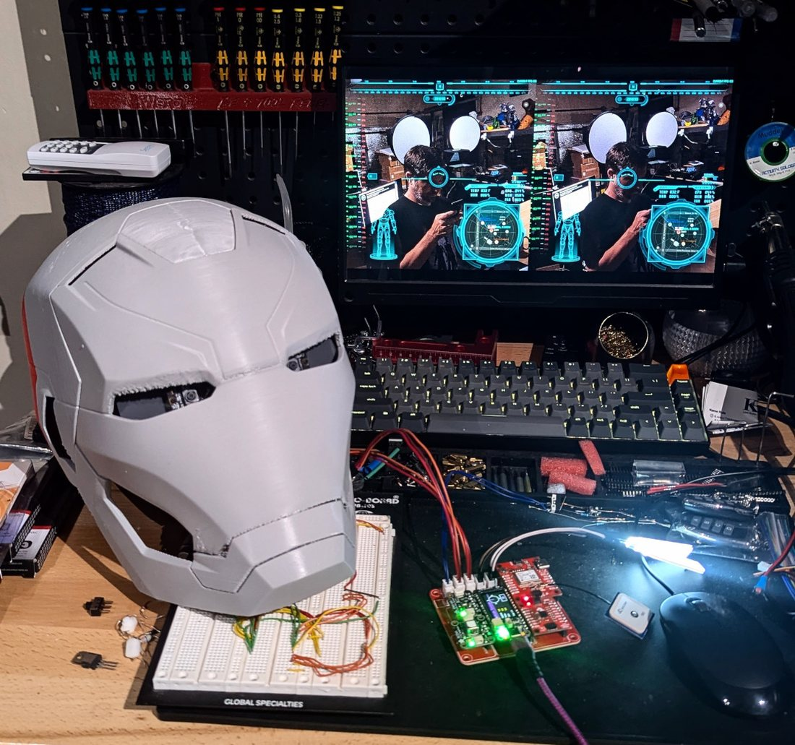

What is OASIS?
My open-source attempt at a real-life JARVIS —
one AI for your home and your Iron Man suit.
Voice AI. Heads-up display. Sensors. Telemetry. Repulsors. All GPLv3.
The short version
OASIS — Open Armor Systems Integrated Suite — is one open-source AI framework that runs your home and the full hardware-and-software stack for a wearable Iron Man suit. It's the same assistant across both. Tony Stark's systems — a voice AI, a heads-up display, sensors, telemetry, and a versatile suit controller and monitor — can be built today from off-the-shelf parts and open-source code. That's what OASIS is.
None of it is a mockup. The voice assistant gets used every day. The heads-up display shows a live camera passthrough with gauges, maps, and data overlaid. The sensor suite reads IMU, GPS, air quality, and temperature in real time. The telemetry daemon watches the host computer's load, power/battery, and thermals. The armor firmware drives repulsor LEDs over wireless and monitors each component's battery and temperature. The 3D-printable parts integrate into your suit's model to enhance its capabilities.
Every line of code, every CAD file, every wiring diagram, every prompt is in the open under GPLv3. You can clone the repos, build the parts, and have it all running on your own hardware.
Why this exists
I started OASIS with a simple question: how much of the Iron Man stack can you actually build today with parts you can order online?
The answer may surprise you: most of it. GPU-accelerated speech recognition runs on inexpensive embedded boards. Streaming LLM responses with sub-second perceived latency are routine, whether the model is local or in the cloud. Stereoscopic micro-displays cost less than a phone. ESP32 boards with built-in WiFi and Bluetooth are sub-$10. Lithium battery packs are commodity hardware. What was a movie special effect a decade ago is now an embedded systems project.
OASIS is the proof: a system I maintain and actually use.

Written in C, the right way
Almost every voice assistant like this is written in Python, or simply a fancy WebUI written in Node.js. OASIS isn't. The whole suite is written in C and C++, running close to the metal on the same kind of embedded hardware that has to be fast, predictable, and last on a battery.
As far as I know, it's the only JARVIS-class assistant built this way. For an embedded, real-time system you wear, C is simply the right choice — no interpreter overhead, and no garbage collector pausing mid-sentence between you and the hardware.
It's how Tony would have built it — engineered, not scripted.
Seven components, one platform
Each part is independent and useful on its own; together they form a complete system. DAWN is the brain, MIRAGE the eyes, STAT the dashboard, ECHO the radio, AURA the senses, SPARK the armor components, and BEACON the mechanical design — each with its own repo, wired together over MQTT and WebSocket.
How the pieces fit together
DAWN sits at the center. The voice assistant is the orchestration hub — it interprets commands, runs tools, and routes messages to every other component over MQTT and direct WebSocket links.
AURA streams sensor readings up to DAWN. STAT reports the host computer's power and system health. SPARK publishes armor and repulsor state and takes commands. ECHO routes incoming calls and SMS into the same conversation surface. MIRAGE subscribes to the relevant topics and renders everything on the HUD. You talk to DAWN; DAWN talks to everything else.
Each component is a standalone repo that builds independently. You can run DAWN on its own as a voice assistant. You can run MIRAGE on its own as a HUD. The integration is in the protocols, not in any one binary.
Not just the suit — your whole home
What most people miss: DAWN is a JARVIS for your house, not just your armor. The suit is just one of the things it runs.
The same assistant lives on a device in your home and reaches everything in it — lights, locks, and climate through Home Assistant; your calendar and email; music in any room; web search, reminders, and notes it keeps for you. Voice satellites on Raspberry Pi and ESP32 put it in the kitchen, the office, and the workshop. Talk to it out loud, from a browser, or from Telegram, Slack, Discord, and SMS — it'll even take a phone call. And it remembers you across all of it.
Suit up and DAWN is your heads-up co-pilot. Walk back through the door and it's the same brain running your home — cloud-optional, private by default, and entirely yours.
The philosophy
It's all GPLv3, open source and ready for the community to dig in. Take it, change it, submit your work back to the project — that's the whole point.
There's no telemetry, no analytics, and nothing phoning home — no third-party plugin marketplace with its own security problems, no cloud account to get locked out of, no subscription, and no kill switch. Once it's built, the hardware and the data are yours, and the only thing between you and a working system is the time to put it together.
Cloud LLMs are optional. DAWN runs fully local on a Jetson with Whisper and either llama.cpp or Ollama if you want it to — out of the box, the config keeps everything on your own hardware.
What's real, what's still cooking
An honest status check. It's a one-person project, not a funded startup.
| Component | Status | Notes |
|---|---|---|
| DAWN | Mature | Production-grade. 20+ tools, multi-room satellites, persistent memory. |
| MIRAGE | Mature | Dual displays, 16 HUD screens, live camera passthrough, hardware H.264 recording and streaming. |
| STAT | Mature | Host-system telemetry (CPU, memory, power, battery, fans), Python GUI. |
| ECHO | Mature | Cellular modem daemon. Calls + SMS routed to DAWN; concatenated SMS supported. |
| AURA | Working | New v2.5 hardware. Sensor suite operational, servo faceplate functional. |
| SPARK | Working | Armor + repulsor firmware — repulsor LEDs, gestures, and armor telemetry — on real hardware. |
| BEACON | Iterative | Parts library grows as the build progresses. Open contributions welcome. |
Who OASIS is for
Makers and builders
If you want to assemble a wearable system from open hardware and open code, the whole stack is here. No reverse engineering required.
Embedded developers
Six independent repos covering C/C++ on Linux, FreeRTOS on ESP32, Python tooling, SDL UI, and MQTT integration. Pick a layer and dig in.
Privacy-first users
A voice assistant that doesn't send your conversations to a third party. Configure it cloud-free and it stays on your hardware.
Dig in
Start with DAWN — it's the most mature piece — or jump straight to the GitHub org.